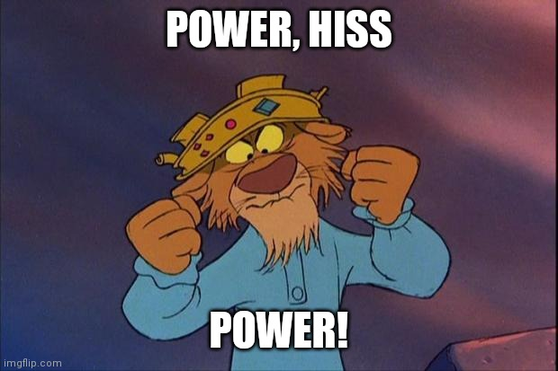

Computational thinking 2
Introduction
Let’s put the fun in functions
No I will not apologize.
Data are nouns. Functions are verbs. Together they make sentences.
In Week 2 you learned how R organizes information in data structures. Then in Week 3 you used tidyverse functions to manipulate data frames. Now you’re going to learn how to write your own functions.
Functions do things
This is where programming gets fun. Computational thinking is all about breaking problems down into manageable pieces, solving them individually, then re-assembling them into a solution. Functions are both how you solve individual problems and how you reassemble them.

But there are other ways to do things, so why should you bother learning functions? You’ve probably written meaningful analyses without ever writing a function yourself, so why take on the learning curve to add functions to your toolbox? Short answer: because they’ll make your life easier. Long answer: scientific analysis in modern eco/evo requires solving complex problems computationally. Without functions, you pretty much have to tackle complex problems as a whole. Our brains are finite, so that limits the complexity of our science. But with functions, we can break down complex problems into simpler components, write functions to solve those components, then solve the whole problem by putting the components back together.
Here’s an example of a complex problem: reading a CSV file. The contents of a CSV file might look like this:
“city_name”,“population”
“Santa Barbara, CA”,88255
“Santa Cruz, CA”,61950
“Washington, DC”,712816
“Kennicott, AK”,NAThat’s two columns, city_name and population, with four rows. Without functions, reading a CSV file would require you to:
- Open a connection to file.
- Read all the text.
- Split each row by commas . But only the right commas! Not the one in “Santa Barbara, CA”.
- Figure out the column names.
- Figure out column types, and perhaps convert types as necessary.
- Create a data frame containing the data.
Here’s how that complex problem works in code:
- Call
read_csv()
Now you might be saying, “wait, this is a bogus example because reading a CSV file is a simple task.” In that case, I suggest you try reading a CSV file from scratch in R. You’ll quickly discover that reading CSV files is in fact an extremely complex task. But all that complexity has been rolled up into a function called read_csv(), so you can safely ignore that complexity and focus on your science instead.
The fact we can forget how complex a problem like reading CSV files is showcases the the beauty of functions. It’s a principle called abstraction. We take a complex problem, stuff all the logic into a tidy box that’s easy to think about (file path in, data frame out), and free up our cognitive power for other tasks. Today you’ll learn how to do that for your own complex problems.
Lesson
Student learning objectives
- Identify the parts of a function definition (syntax)
- Use functions to transform inputs (parameters, arguments) into outputs
- Write a function to automate a common task
Identify the parts of a function
Jargon
Syntax. In programming, syntax is basically spelling and grammar. It’s the rules for what the programming language can and cannot understand. For example, you have to use commas to separate arguments in a function call like this c("a", "b"). If you leave out the comma c("a" "b") then you have a syntax error and R won’t know what to do.
Parameter. The logic inside of a function is unaware of the real world around it, so parameters are placeholders for input.
Argument. When you call a function on some input, those inputs are the arguments. Think of arguments as real things, which get substituted for the function’s parameters. The distinction between parameters and arguments will become clearer in a bit.
Let’s use a mathematical function as a template for thinking about function syntax, where syntax is the rules for text that R can understand as code. We’ll use the mean, \(\bar x\), defined as:
\[ \bar x = \frac{\sum_{i=1}^{n} x_i}{n} \]
In plain language, the mean of \(x\) is the sum of its elements divided by the number of elements. Before we convert this logic to an R function, let’s break down function syntax.
An R function has four parts.
- The name of the function
- The keyword
function - Parameters
- Body
We can write our own mean() function from those four parts.
mean <- function(x) {
result <- sum(x) / length(x)
return(result)
}mean is our function name, followed by the keyword function (a signal to R to expect a function definition), then the parameter(s) in parentheses (which define what input the function expects), and finally the body in curly braces (the function’s actual logic).
Q1 I’ve written a function to calculate the standard error and broken it into four parts. Match the parts (left column) to their names (right column).
| Function parts (code) | Function parts (names) |
|---|---|
|
Function name |
|
Keyword “function” |
|
Parameters |
|
Body |
Transform arguments into output
Consider the following code snippet.
first_last_chr <- function(s) {
first_chr <- substr(s, 1, 1)
last_chr <- substr(s, nchar(s), nchar(s))
result <- paste(first_chr, last_chr, sep = "")
return(result)
}
text <- "Amazing!"
first_last_chr(text)Q2 What are the four parts of this function?
Function name = first_last_chr
Keyword function = function
Parameters = s
Body = Everything in the {}
Q3 What output do you get when you call first_last_chr() on text?
A!
The distinction between parameters and arguments is subtle, but it’s critical for understanding how functions transform inputs to create outputs.
s is a parameter. text is an argument. s is a placeholder in the little mini-universe that is the body of first_last_chr(). text is an actual object that we assigned a value to. When we call a function on an argument, the function essentially renames the argument with the name of the parameter.
Let’s look at the definition of first_last_chr() again.
first_last_chr <- function(s) {
first_chr <- substr(s, 1, 1)
last_chr <- substr(s, nchar(s), nchar(s))
### PAUSE HERE
result <- paste(first_chr, last_chr, sep = "")
return(result)
}Q4 Let’s say you’re starting with a fresh R session and you run the code above to define first_last_chr. At the line where it says ### PAUSE HERE, what is the value of s?
s has no value yet. Parameters don’t have values until the function is called. Then they take on the value of the argument.
Now call the function on some input.
text <- "Amazing!"
first_last_chr(text)Q5 At the line where it says ### PAUSE HERE, what is the value of s?
Because we’re in the function body, the parameter s has taken on the value of its argument. So s is "Amazing!".
Q6 Fill in the blank below so the result is “My”.
first_last_chr("___")A lot of possible answers. One is first_last_chr("Max Czapanskiy").